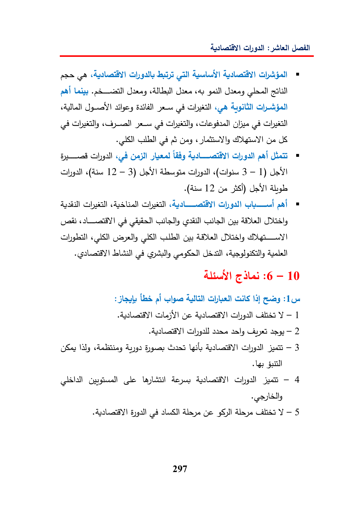

Gbgallspall)anecotilgallsbtpalLoiscaygaillGi)diSallyjascleab)(8ragGeUSCalygallLadyGilgallaf(Ais12—3)AbasgisGlygall3—1)da12GoSI)aud)Gi)gal)vatasta)Ga(ASNGayally1SGaADL28ALY6—10alAt13)yehasY—1sane2(KayWaly(gis—3GleLalitdopeGhylljut-48gallfe)AlayeGyeCainsY-5297